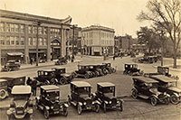

Eighty-five years ago on June 1, 1925, the Town of Union (colloquially known as Union Hill) and the Township of West Hoboken joined together and became one, the city of Union City. Today with a population of approximately 80,000 residents under the auspices of Mayor Brian P. Stack and the Board of Commissioners the city is experiencing an unprecedented period of economic, cultural, and artistic growth needed to remain vital and prosperous in the 21st century. As Union City looks forward and embraces the future it is also proper to pause and reflect on its past. Eighty-five years only marks the incorporation of the City of Union City. Its history is far older. The original inhabitants of the area where Union City is now situated were the Native Americans. An Algonquian group, the Munsee speaking branch of the Lenni-Lenape, wandered the vast area of woodlands Henry Hudson encountered during his voyage of exploration (1609-1610) in service of the Dutch. Of the many European countries colonizing North America, the Dutch claimed this area, which would include the future New York City, and named it New Netherland. The part of land that would one day become Hudson County was purchased from the Hackensack branch of the Lenni-Lenape in 1658 by Peter Stuyvesant, the Governor of New Netherland. The deed is preserved in the New York State Archives.
The deed describes the boundaries of the land purchased: " The tract of land lying on the west side of the North (Hudson) River. The tract beginning at the Great Clip or Great Rock of Wiehacken (Weehawken) through lands above the Islandt Siskakes (Secaucus) from there to the Kill van Kull and along the channel side to Constables Hook. From Constables Hook once again to the Great Clip in Wiehacken." The tract of land was purchased for the price of "80 fathoms of wampum, 20 fathoms of cloth, 12 brass kettles, 6 guns, one double brass kettle, 2 blankets, and one half barrel of strong beer." The relationship between the early Dutch settlers and the Native Americans was an uneasy one. Disputes over property and land claims frequently led to skirmishes and war between the two groups.
In seeking a way to protect the defenseless farmhouses in the newly acquired area, Peter Stuyvesant in 1660 ordered the building of a fortified village. The village known as Bergen was the first permanent settlement in New Jersey, now Jersey City. In 1664 the English captured New Netherland from the Dutch. At that time the boundaries of Bergen Township encompassed the area we know as Hudson County. To the north of Bergen Village was a largely unpopulated area known as Bergen Woods which would slowly be claimed by settlers. Some streets in Union City still retain the names of the early settlers. Yet the area that would one day become Union City remained sparsely inhabited until the early part of the nineteenth century.
Read more
Follow us on Social Media
Follow @OfficialUCNJ